それでは簡単な例題として、リサイズ可能なアナログ時計を作ってみましょう。今回は、時計をウィンドウいっぱいに広げて描画することにします。楕円の長径を a、短径を b、媒介変数を t とすると、楕円は以下の式で表すことができます。
x = a * cos(t) y = b * sin(t) 0 <= t < 2π
キャンバスウィジェットに長針、短針、秒針を描き、1 秒ごとに針の位置を動かします。針の位置は上記の式で計算します。短針は動きを滑らかにするために、1 分ごとに位置を動かします。したがって、短針を動かす角度は 360 / (12 * 60) = 0.5 度となります。
今回はユーザからの入力がなくても時計を動かさないといけなので、単純なイベント駆動型アプリケーションでは「時計」を実現することはできません。このため、プログラム自身でなんらかのきっかけを作ってやる必要があります。このような場合、役に立つメソッドが after() です。
このように、after() には単純な時間待ちを行うほかに、一定時間後に指定した command を起動するタイマーの働きも持っています。たとえば、一定間隔で実行する関数を foo() としましょう。この場合、foo() の最後で after() を使って自分自身の起動を設定すればいいのです。具体的には次のようにプログラムします。
def foo():
# foo の処理
.....
root.after(500, foo)
root はメインウィンドウを表します。これで 500 msec 後に foo() が実行されます。もっとも、厳密に 500 msec ごとに foo() が実行されるわけではありません。foo() の処理にも時間がかかりますし、Windows はマルチタスクで動作しているので、ほかのタスクの影響も受けるからです。まあ、厳密なリアルタイム処理は必要としないので、これで十分です。
現在の日付と時刻を求めるには Python のモジュール time を使います。時間を求める主な関数を示します。
gmtime(), localtime() の返り値や strftime() の format で指定できる書式は Python のマニュアルを参照してください。今回は時間に関する書式を使います。
%H 時刻 (00 - 23) %I 時刻 (01 - 12) %M 分 (00 - 59) %S 秒 (00 - 61)
strftime() を使えば、デジタル時計は簡単に作成することができます。
リスト : デジタル時計
import tkinter as tk
from time import *
root = tk.Tk()
root.option_add('*font', ('', 24))
buff = tk.StringVar()
buff.set('')
tk.Label(textvariable = buff).pack()
# 時刻の表示
def show_time():
buff.set(strftime('%I:%M:%S'))
root.after(1000, show_time)
show_time()
root.mainloop()
メニューでフォントや色を変更できるように改造すると、おもしろいと思います。
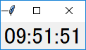 デジタル時計
最初に画面を設定します。ウィンドウが小さくなると時計がよく見えないので、ウィンドウの大きさを制限します。これはメソッド minsize() と maxsize() で設定することができます。幅と高さはピクセル単位で指定します。次のリストを見てください。
リスト : 画面の設定
# メインウィンドウ
root = tk.Tk()
root.title('時計')
root.minsize(140, 140)
root.maxsize(500, 500)
# グローバル変数
width = 140
height = 140
sin_table = []
cos_table = []
backboard = []
# キャンバス
c0 = tk.Canvas(root, width = 140, height = 140, bg = 'lightgray')
c0.pack(expand = True, fill = tk.BOTH)
# 図形の生成
circle = c0.create_oval(5, 5, 135, 135)
for i in range(60):
if i % 5 == 0:
w = 2.0
else:
w = 1.0
backboard.append(c0.create_line(i, i, 135, 135, width = w))
hour = c0.create_line(70, 70, 70, 30, fill = 'blue', width = 5.0)
min = c0.create_line(70, 70, 70, 20, fill = 'green', width = 3.0)
sec = c0.create_line(70, 70, 70, 15, fill = 'red', width = 2.0)
ウィンドウの大きさは、幅と高さを 140 から 500 ピクセルの範囲に制限します。背景の円と目盛を表す図形は、変数 circle とリスト backboard に格納します。針を表す図形は変数 hour, min, sec に格納します。ここは図形を生成するだけなので、位置はでたらめでもかまいません。
さて、問題はウィンドウがリサイズされた場合です。ここで発生するイベントが Configure です。このイベントをバインドして、ウィンドウの大きさが変わったら時計を再描画すればいいわけです。バインドはメインウィンドウに対して設定すれば大丈夫です。
root.bind('<Configure>', change_size)
キャンバスウィジェットは fill と expand を設定して pack されているので、ウィンドウの大きさが変わると、キャンバスの大きさも変わります。詳しい説明は拙作のページ ウィンドウのリサイズ をお読みくださいませ。このときに Configure イベントを受け取るので、時計の大きさを変える関数 change_size() を実行します。
キャンバスウィジェットの大きさですが、これは cget() メソッドでは求めることができません。実際、ウィンドウがリサイズされキャンバスウィジェットが引き伸ばされても、最初に設定されたオプションの値そのままになっています。キャンバスウィジェットの大きさを求めるには、ウィジェットの情報を取得するメソッド winfo_width() と winfo_height() を使います。change_size() は次のようになります。
リスト : 大きさの変更
def change_size(event):
global width, height
width = c0.winfo_width()
height = c0.winfo_height()
draw_backboard()
draw_hand()
width と height は時計の大きさを表すグローバル変数で、キャンバスと同じ大きさに初期化しておきます。キャンバスの幅と高さを求め、それらの値を width と height にセットします。
図形の配置は背景を関数 draw_backboard() で、針を関数 draw_hand() で行います。これらの関数は width と height にセットされた大きさに合わせて時計を描画します。描画は coords() メソッドで図形を移動させるだけです。針を動かす関数 draw_hand() は次のようになります。
リスト : 針の描画
def draw_hand():
t = time.localtime()
w = width / 2
h = height / 2
# 秒
n = t[5] * 12
x = w + w * sin_table[n] * 7 / 8
y = h - h * cos_table[n] * 7 / 8
c0.coords(sec, w, h, x, y)
# 分
n = t[4] * 12
x = w + w * sin_table[n] * 6 / 8
y = h - h * cos_table[n] * 6 / 8
c0.coords(min, w, h, x, y)
# 時
h1 = t[3]
if h1 >= 12: h1 -= 12
n = h1 * 60 + t[4]
x = w + w * sin_table[n] * 4 / 8
y = h - h * cos_table[n] * 4 / 8
c0.coords(hour, w, h, x, y)
まず localtime() で現在時刻を求めます。返り値のタプルには、t[3] に時間、t[4] に分、t[5] に秒が格納されています。あとは、あらかじめ計算しておいた三角関数表 sin_table と cos_table を使って座標を計算し、メソッド coords() で針を移動させます。draw_backboard() も簡単なので説明は割愛いたします。詳細は プログラムリスト をお読みくださいませ。
あとは after() メソッドを使って、１秒ずつ針を動かします。
# 表示
def show_time():
draw_hand()
root.after(1000, show_time)
show_time() は draw_hand() を呼び出して針を描画し、1 秒後に show_time() を呼び出すよう after() メソッドで設定します。最後に show_time() を実行すれば、1 秒ごとに短針が動き、時計が動作します。
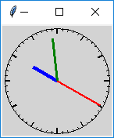 最小サイズ
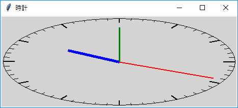 ウィンドウを横に伸ばす
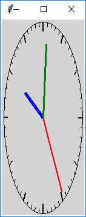 ウィンドウを縦に伸ばす
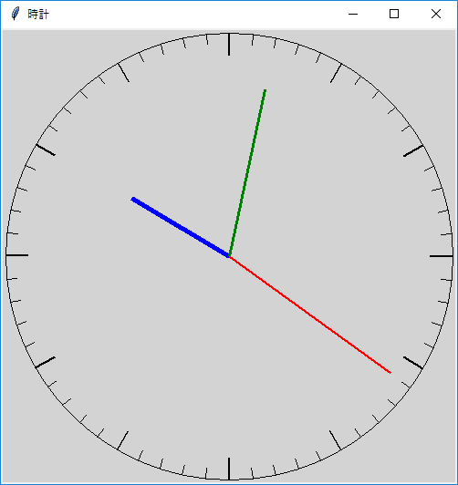 最大サイズ
これで、リサイズ可能なアナログ時計を作ることができました。シンプルな時計なので、少々物足りないかもしれません。興味のある方は、プログラムを改造してみてください。
#
# aclock.py : アナログ時計
#
# Copyright (C) 2019 Makoto Hiroi
#
import tkinter as tk
import math, time
# メインウィンドウ
root = tk.Tk()
root.title('時計')
root.minsize(140, 140)
root.maxsize(500, 500)
# グローバル変数
width = 140
height = 140
sin_table = []
cos_table = []
backboard = []
# キャンバス
c0 = tk.Canvas(root, width = 140, height = 140, bg = 'lightgray')
c0.pack(expand = True, fill = tk.BOTH)
# 図形の生成
circle = c0.create_oval(5, 5, 135, 135)
for i in range(60):
if i % 5 == 0:
w = 2.0
else:
w = 1.0
backboard.append(c0.create_line(i, i, 135, 135, width = w))
hour = c0.create_line(70, 70, 70, 30, fill = 'blue', width = 5.0)
min = c0.create_line(70, 70, 70, 20, fill = 'green', width = 3.0)
sec = c0.create_line(70, 70, 70, 15, fill = 'red', width = 2.0)
# データの初期化
def init_data():
for i in range(720):
rad = 3.14 / 360 * i
sin_table.append(math.sin(rad))
cos_table.append(math.cos(rad))
# 背景の描画
def draw_backboard():
w = width / 2
h = height / 2
# 楕円
c0.coords(circle, 5, 5, width - 5, height - 5)
# 目盛
for i in range(60):
n = i * 12
if n % 5 == 0:
l = 0.9
else:
l = 0.95
x1 = w + (w - 5) * sin_table[n]
y1 = h + (h - 5) * cos_table[n]
x2 = w + (w - 5) * l * sin_table[n]
y2 = h + (h - 5) * l * cos_table[n]
c0.coords(backboard[i], x1, y1, x2, y2)
# 針を描く
def draw_hand():
t = time.localtime()
w = width / 2
h = height / 2
# 秒
n = t[5] * 12
x = w + w * sin_table[n] * 7 / 8
y = h - h * cos_table[n] * 7 / 8
c0.coords(sec, w, h, x, y)
# 分
n = t[4] * 12
x = w + w * sin_table[n] * 6 / 8
y = h - h * cos_table[n] * 6 / 8
c0.coords(min, w, h, x, y)
# 時
h1 = t[3]
if h1 >= 12: h1 -= 12
n = h1 * 60 + t[4]
x = w + w * sin_table[n] * 4 / 8
y = h - h * cos_table[n] * 4 / 8
c0.coords(hour, w, h, x, y)
# 大きさの変更
def change_size(event):
global width, height
width = c0.winfo_width()
height = c0.winfo_height()
draw_backboard()
draw_hand()
# 表示
def show_time():
draw_hand()
root.after(1000, show_time)
# バインディング
root.bind('<Configure>', change_size)
# データの初期化
init_data()
# 最初の起動
draw_backboard()
show_time()
# メインループ
root.mainloop()
A. K. デュードニー 著「別冊 日経サイエンス コンピューターレクリエーション３ 遊びの発見」 より、 ワーム（ミミズ）のグラフィックです。本では１匹のミミズしか登場しませんが、 このプログラムではミミズを４匹に増やしました。 ミミズは円を連結しているだけの簡単なグラフィックなので、 すぐに飽きると思います。 ミミズの数を増やすとか色や形を変えるなど、プログラムを改造して遊んでみてください。
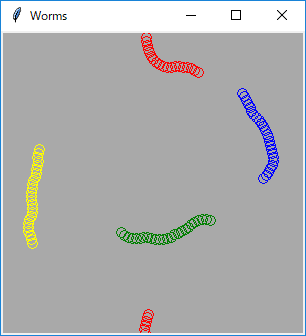
#
# worms.py : ワーム
#
# Copyright (C) 2019 Makoto Hiroi
#
import tkinter as tk
import random, math
root = tk.Tk()
root.title('Worms')
board_size = 300
c0 = tk.Canvas(width = board_size, height = board_size, bg = 'darkgray')
c0.pack()
# ワームの体を作る
def make_body(color):
body = []
x = board_size / 2
for _ in range(25):
id = c0.create_oval(x, x, x + 10, x + 10, outline = color)
body.append(id)
return body
# ワーム
class Worm:
def __init__(self, color):
self.body = make_body(color)
self.x = board_size / 2
self.y = board_size / 2
self.dir = 0
self.tail = 0
def move_worm(self):
self.tail = (self.tail + 1) % 25
if random.random() > 0.5:
self.dir += 0.18
else:
self.dir -= 0.18
self.x += math.sin(self.dir) * 4.0
if self.x < 0.0:
self.x += board_size
elif self.x >= board_size:
self.x -= 300
self.y += math.cos(self.dir) * 4.0
if self.y < 0.0:
self.y += board_size
elif self.y >= 300:
self.y -= board_size
c0.coords(self.body[self.tail], self.x, self.y, self.x + 10, self.y + 10)
worm1 = Worm('red')
worm2 = Worm('blue')
worm3 = Worm('yellow')
worm4 = Worm('green')
# 表示
def show_worm():
worm1.move_worm()
worm2.move_worm()
worm3.move_worm()
worm4.move_worm()
root.after(50, show_worm)
show_worm()
root.mainloop()
ライフゲームは 1970 年にイギリスの数学者コンウェイ氏が考案したシミュレーションゲームです。格子状に並んだマス (セル) で生命を表し、周りのセルの状態で生命が誕生したり死滅したりします。以下に規則を示します。
今回のゲームでは黄色の四角形で生きている生命を表しています。ゲームを停止しているとき、マウスの左クリックで生命を追加したり取り除くことができます。
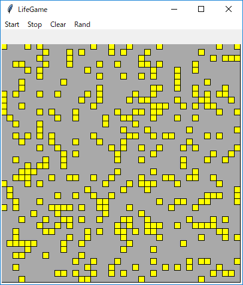 生命をランダムに配置
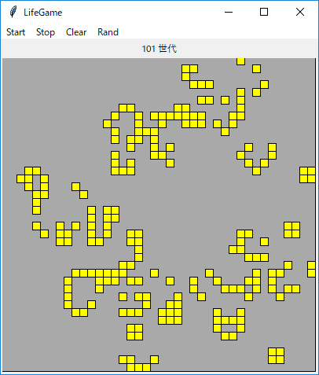 途中経過
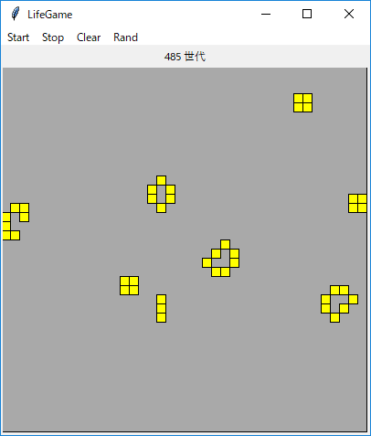 定常状態
#
# lifegame.py : ライフゲーム
#
# Copyright (C) 2019 Makoto Hiroi
#
import tkinter as tk
import random
line = 40
column = 40
game_id = None
root = tk.Tk()
root.title('LifeGame')
buff = tk.StringVar() # ラベルのバッファ
buff.set("")
# ラベル
l0 = tk.Label(textvariable = buff)
l0.pack()
# キャンバス
c0 = tk.Canvas(width = column * 10, height = line * 10)
backboard = c0.create_rectangle(0, 0, column * 10, line * 10, fill = 'darkgray', tags = 'back')
c0.pack()
generation = 0 # 世代数
cells = [] # セルを表す図形 ID を格納
world1 = [] # 0: 死, 1: 生
world2 = []
# 世代を進める
def next():
for y in range(line):
for x in range(column):
c = 0
# 生きているセルをカウント
for dx, dy in [(-1, -1), (0, -1), (1, -1), (-1, 0), (1, 0), (-1, 1), (0, 1), (1, 1)]:
x1 = x + dx
y1 = y + dy
if 0 <= x1 < column and 0 <= y1 < line:
c += world1[y1][x1]
if world1[y][x] == 0:
if c == 3:
world2[y][x] = 1 # 誕生
c0.tag_raise(cells[y][x], 'back')
else:
world2[y][x] = 0
else:
if c <= 1 or c >= 4:
world2[y][x] = 0 # 過疎または過密
c0.tag_lower(cells[y][x], 'back')
else:
world2[y][x] = 1 # 存続
# セルの生成
def make_cell(x, y):
x1 = x * 10
y1 = y * 10
return c0.create_rectangle(x1, y1, x1 + 10, y1 + 10, fill='yellow', tags = 'cell')
for y in range(line):
cells.append([make_cell(x, y) for x in range(column)])
world1.append([0 for _ in range(column)])
world2.append([0 for _ in range(column)])
# 乱数による初期化
def init_game():
if game_id: return
for y in range(line):
for x in range(column):
if random.random() <= 0.2:
world1[y][x] = 1
c0.tag_raise(cells[y][x], 'back')
else:
world1[y][x] = 0
c0.tag_lower(cells[y][x], 'back')
# ゲームの進行を表示する
def show_game():
global world1, world2, game_id, generation
next()
world1, world2 = world2, world1
generation += 1
buff.set('{} 世代'.format(generation))
game_id = root.after(300, show_game)
# ゲームの開始
def start_game():
if game_id is None: show_game()
# ゲームの停止
def stop_game():
global game_id
if game_id:
root.after_cancel(game_id)
game_id = None
# ゲームのクリア
def clear_game():
global generation
if game_id: return
for y in range(line):
for x in range(column):
world1[y][x] = 0
c0.tag_lower('cell', 'back')
generation = 0
buff.set('')
# マウスによる入力
def click(event):
if game_id: return
x = (event.x // 10) % column
y = (event.y // 10) % line
world1[y][x] ^= 1
if world1[y][x]:
c0.tag_raise(cells[y][x], 'back')
else:
c0.tag_lower(cells[y][x], 'back')
# バインディング
c0.tag_bind('back', "<Button-1>", click)
c0.tag_bind('cell', "<Button-1>", click)
# メニューバー
menubar = tk.Menu(root)
root.configure(menu = menubar)
menubar.add_command(label="Start", underline = 0, command = start_game)
menubar.add_command(label="Stop", underline = 0, command = stop_game)
menubar.add_command(label="Clear", underline = 0, command = clear_game)
menubar.add_command(label="Rand", underline = 0, command = init_game)
clear_game()
root.mainloop()
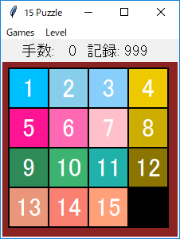
皆さんお馴染みの 15 パズルです。レベルは Easy, Normal, Hard の三段階あります。Easy は最長でも 25 手、Normal は 50 手、Hard は 75 手で解くことができます。乱数で駒を動かしているので、実際にはそれよりも短い手数で解くことができると思います。
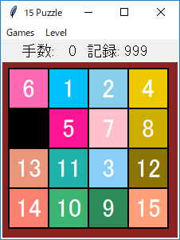 ゲーム開始 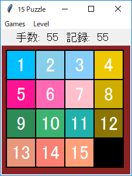 55 手で解けた
#
# fifteen.py : 15 パズル
#
# Copyright (C) 2019 Makoto Hiroi
#
import tkinter as tk
import tkinter.messagebox as msg
import sys, random
# 隣接リスト
adjacent = (
(1, 4), # 0
(0, 2, 5), # 1
(1, 3, 6), # 2
(2, 7), # 3
(0, 5, 8), # 4
(1, 4, 6, 9), # 5
(2, 5, 7, 10), # 6
(3, 6, 11), # 7
(4, 9, 12), # 8
(5, 8, 10, 13), # 9
(6, 9, 11, 14), # 10
(7, 10, 15), # 11
(8, 13), # 12
(9, 12, 14), # 13
(10, 13, 15), # 14
(11, 14) # 15
)
# 駒の色
piece_color = (
None,
'deep sky blue',
'sky blue',
'light sky blue',
'gold2',
'deep pink',
'hot pink',
'pink',
'gold3',
'sea green',
'medium sea green',
'light sea green',
'gold4',
'dark salmon',
'salmon',
'light salmon'
)
# メインウィンドウ
root = tk.Tk()
root.title('15 Puzzle')
# グローバル変数
level = tk.IntVar() # Easy = 0, Normal = 1, Hard = 2
level.set(0)
buff = tk.StringVar() # ラベルのバッファ
buff.set("")
moves = 0 # 手数
gameflag = False # ゲーム中ならば True
min_moves = [999, 999, 999]
shuffle_count = [25, 50, 75]
# 手数表示用ラベル
la = tk.Label(textvariable = buff, font = ('', 14))
la.pack()
# 盤面を表示するためのキャンバス
c0 = tk.Canvas(root, width = 220, height = 220, bg = 'brown4')
c0.create_rectangle(9, 9, 210, 210, fill = 'black')
c0.pack()
# 盤面
board = [ 1, 2, 3, 4,
5, 6, 7, 8,
9, 10, 11, 12,
13, 14, 15, 0]
# 駒
piece = [None]
# 手数の表示
def show_moves(m):
buff.set('手数: {:3d} 記録: {:3d} '.format(m, min_moves[level.get()]))
# 空き場所を探す
def search_space(z):
for s in adjacent[z]:
if board[s] == 0: return s
# 駒の移動
def move_piece(n):
global moves, gameflag
if not gameflag: return
z = board.index(n)
x = z % 4
y = z // 4
s = search_space(z)
if s is not None:
x1 = s % 4
y1 = s // 4
board[s] = n
board[z] = 0
c0.coords(piece[n], x1 * 50 + 35, y1 * 50 + 35)
moves += 1
show_moves(moves)
if board == [1,2,3,4,5,6,7,8,9,10,11,12,13,14,15,0]:
msg.showinfo(message = 'おめでとうございます')
if min_moves[level.get()] > moves:
min_moves[level.get()] = moves
show_moves(moves)
gameflag = False
# ゲームの開始
def start_game():
global moves, gameflag
move = [0]
moves = 0
gameflag = True
show_moves(moves)
for i in range(15):
board[i] = i + 1
board[15] = 0
s = 15
c = 0
while c < shuffle_count[level.get()]:
d = random.choice(adjacent[s])
p = board[d]
if p == move[-1]: continue
board[s] = p
board[d] = 0
move.append(p)
s = d
c += 1
for i in range(0, 16):
if board[i] == 0: continue
x = i % 4
y = i // 4
c0.coords(piece[board[i]], x * 50 + 35, y * 50 + 35)
#
# 盤面
#
# コールバック関数を生成する
def make_callback(n):
return lambda _: move_piece(n)
# 駒の生成
for i in range(1, 16):
x = (i - 1) % 4
y = (i - 1) // 4
la = tk.Label(root, text = '{}'.format(i), bg = piece_color[i], fg = 'white', font = ('', 24))
la.bind('<Button-1>', make_callback(i))
id = c0.create_window(x * 50 + 35, y * 50 + 35, window = la, width = 48, height = 48)
piece.append(id)
#
show_moves(0)
#
# メニューバー
#
menubar = tk.Menu(root)
root.configure(menu = menubar)
games = tk.Menu(menubar, tearoff = False)
levels = tk.Menu(menubar, tearoff = False)
menubar.add_cascade(label="Games", underline = 0, menu=games)
menubar.add_cascade(label="Level", underline = 0, menu=levels)
# Games
games.add_command(label = "Start", underline = 0, command = start_game)
games.add_separator
games.add_command(label = "exit", underline = 0, command = sys.exit)
# Labels
levels.add_radiobutton(label = 'Easy', variable = level, value = 0, command = start_game)
levels.add_radiobutton(label = 'Normal', variable = level, value = 1, command = start_game)
levels.add_radiobutton(label = 'Hard', variable = level, value = 2, command = start_game)
root.mainloop()
皆さんお馴染みのパズル「ライツアウト」や「８めくりパズル」と同様のパズルです。今回は 5 行 5 列盤で 3 つのパターンを用意しました。
□□□□□ □□□□□
□□□□□ □□■□□
□□□□□ ─→ □■■■□
□□□□□ □□■□□
□□□□□ □□□□□
(1) ＋ パターン
□□□□□ □□□□□
□□□□□ □■□■□
□□□□□ ─→ □□■□□
□□□□□ □■□■□
□□□□□ □□□□□
(2) Ｘ パターン
□□□□□ □□□□□
□□□□□ □■■■□
□□□□□ ─→ □■□■□
□□□□□ □■■■□
□□□□□ □□□□□
(3) Ｏ パターン
図 : 中央のボタンを押したときの反転パターン
(1) はライツアウトと、(3) は８めくりパズルと同じです。5 行 5 列盤の場合、(1) と (2) は全て点灯している状態でも解くことができますが、(3) は解けないので注意してください。最長手数は (1) で 15 手、(2) で 13 手、(3) で 20 手になります。解法アルゴリズムに興味のある方は、以下の拙作のページをお読みくださいませ。
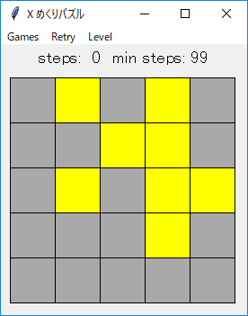 X pattern Easy mode
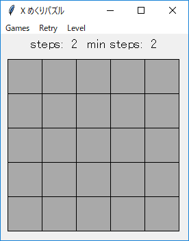 2 手で解けた
#
# xturn.py : X めくりパズル
#
# Copyright (C) 2019 Makoto Hiroi
#
import tkinter as tk
import tkinter.messagebox as msg
import random, sys
# 反転する位置
pattern_table = (
((0, -1), (-1, 0), (0, 0), (1, 0), (0, 1)), # Plus (+)
((-1, -1), (1, -1), (0, 0), (-1, 1), (1, 1)), # X
((-1, -1), (0, -1), (1, -1), (-1, 0), # O (8 めくり)
(1, 0), (-1, 1), (0, 1), (1, 1))
)
root = tk.Tk()
root.title('X めくりパズル')
#
# グローバル変数
#
# ラベルのバッファ
buff = tk.StringVar()
buff.set("")
# メニュー用
pattern = tk.IntVar() # + pattern = 0, X pattern = 1, O pattern = 2
pattern.set(1)
level = tk.IntVar() # Easy = 0, Normal = 1, Hard = 2
level.set(1)
# カードの id を格納
card = []
# 盤面
board = [0] * 25
save_board = None # Retry 用
steps = 0 # 手数
min_steps = 99 # 最短手数
gameflag = False # ゲーム中は True
# 手数表示用ラベル
l0 = tk.Label(textvariable = buff, font = ('', 14))
l0.pack()
# 盤面を表示するためのキャンバス
c0 = tk.Canvas(width = 270, height = 270)
c0.pack()
# 手数の表示
def show_steps():
buff.set('steps: {:2d} min steps: {:2d}'.format(steps, min_steps))
#
# カードをめくる
#
def turn_card_sub(x, y):
for dx, dy in pattern_table[pattern.get()]:
x1 = x + dx
y1 = y + dy
if 0 <= x1 < 5 and 0 <= y1 < 5:
z1 = y1 * 5 + x1
board[z1] ^= 1
if board[z1]:
c0.itemconfigure(card[z1], fill = 'yellow')
else:
c0.itemconfigure(card[z1], fill = 'darkgray')
def turn_card(event):
global steps, gameflag, min_steps
if not gameflag: return
x = (event.x - 10) // 50
y = (event.y - 10) // 50
turn_card_sub(x, y)
steps += 1
show_steps()
if not any(board):
msg.showinfo(message = 'おめでとうございます')
if min_steps > steps: min_steps = steps
show_steps()
#
# 再挑戦！
#
def retry_game():
global board, steps
if not gameflag: return
board = save_board.copy()
steps = 0
for i, x in enumerate(board):
if x:
c0.itemconfigure(card[i], fill = 'yellow')
else:
c0.itemconfigure(card[i], fill = 'darkgray')
show_steps()
#
# ゲームの開始
#
# めくるカードを決定する
def select_card(n):
xs = list(range(25))
ys = []
for _ in range(n):
m = random.choice(xs)
xs.remove(m)
ys.append(m)
return ys
# ゲームの開始
def start_game():
global gameflag, steps, min_steps, save_board
gameflag = True
steps = 0
min_steps = 99
show_steps()
for n in range(25):
board[n] = 0
c0.itemconfigure(card[n], fill = 'darkgray')
if level.get() == 0:
m = random.randrange(2, 5)
elif level.get() == 1:
m = random.randrange(5, 10)
else:
m = random.randrange(10, 16)
for n in select_card(m):
turn_card_sub(n % 5, n // 5)
save_board = board.copy()
# カードの生成
for y in range(5):
for x in range(5):
x1 = x * 50 + 10
y1 = y * 50 + 10
id = c0.create_rectangle(x1, y1, x1 + 50, y1 + 50, fill = 'darkgray', tags = 'card')
card.append(id)
# バインディング
c0.tag_bind('card', '<Button-1>', turn_card)
#
# メニューバー
#
menubar = tk.Menu(root)
root.configure(menu = menubar)
games = tk.Menu(menubar, tearoff = False)
levels = tk.Menu(menubar, tearoff = False)
menubar.add_cascade(label="Games", underline = 0, menu=games)
menubar.add_command(label="Retry", underline = 0, command = retry_game)
menubar.add_cascade(label="Level", underline = 0, menu=levels)
# Games
games.add_command(label = "Start", underline = 0, command = start_game)
games.add_separator
games.add_radiobutton(label = '+ pattern', variable = pattern, value = 0, command = start_game)
games.add_radiobutton(label = 'X pattern', variable = pattern, value = 1, command = start_game)
games.add_radiobutton(label = 'O pattern', variable = pattern, value = 2, command = start_game)
games.add_separator
games.add_command(label = "exit", underline = 0, command = sys.exit)
# Labels
levels.add_radiobutton(label = 'Easy', variable = level, value = 0, command = start_game)
levels.add_radiobutton(label = 'Normal', variable = level, value = 1, command = start_game)
levels.add_radiobutton(label = 'Hard', variable = level, value = 2, command = start_game)
root.mainloop()